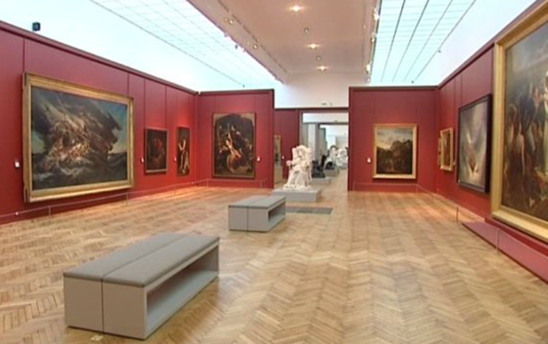
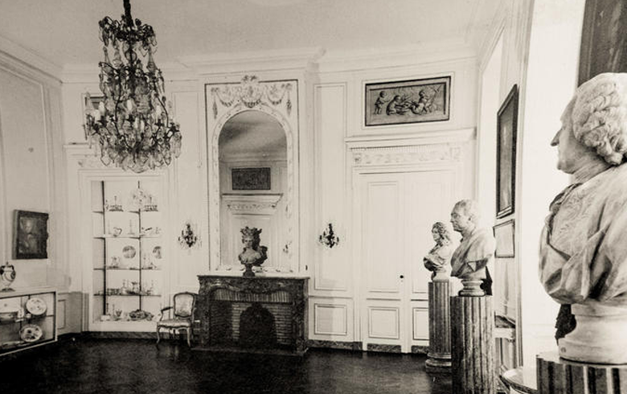
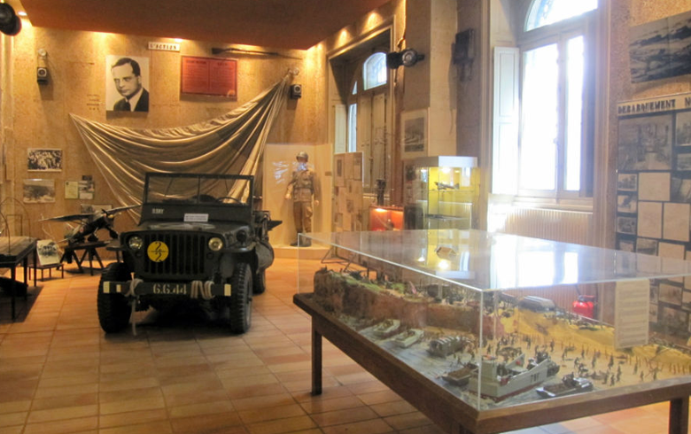
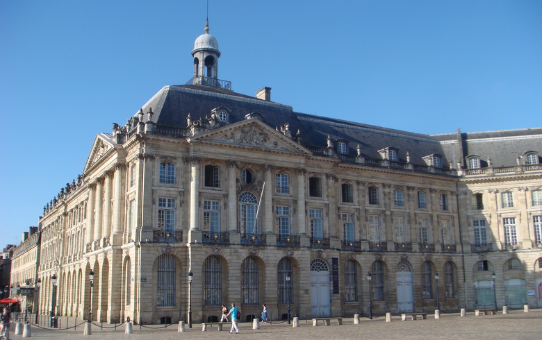
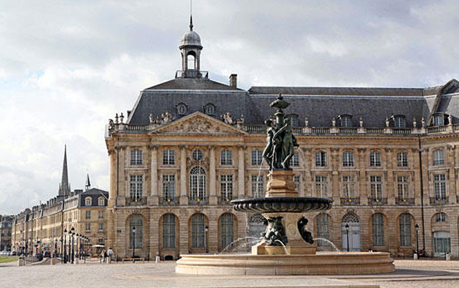
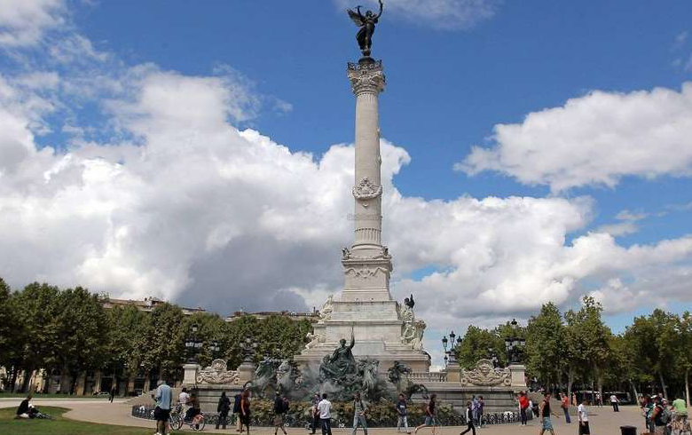
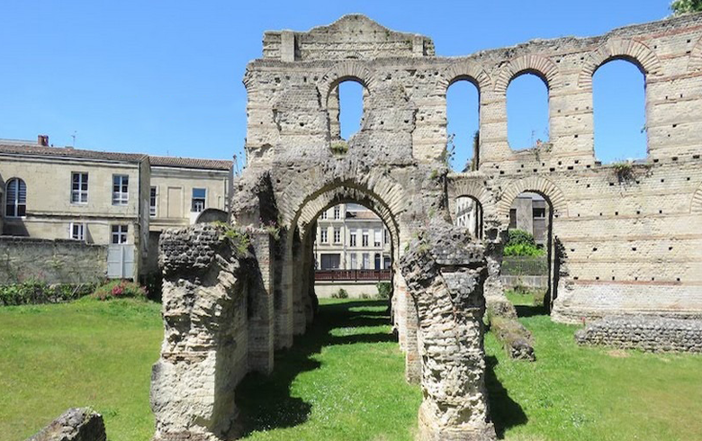
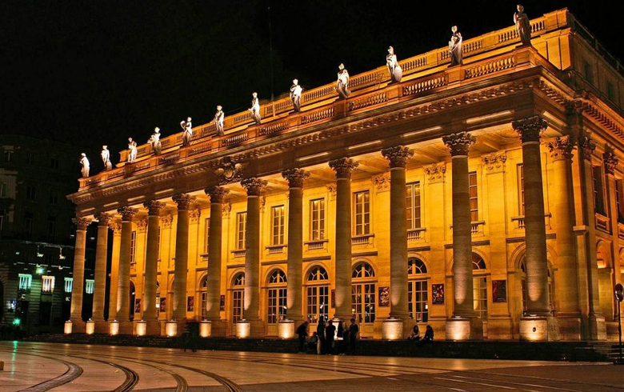

Home
Cultuur
Musea
Munementen
Kerken
Culinair
Gastronomi
Wijn, Excursies
Restaurants
Fotoalbum
Contact
Bordeaux
Office de Tourisme
Wellkom in Bordeaux
ONTDEK BORDEAUX
Ondeck Bordeaux

musée des Beaux Arts

Musee des arts decoratifs
d'Art contemporain
d'Aquitaine bordeaux

Jean Moulin

Musee national des dounes

palace de la Bourse
miroir d'aeu

monument aux girondins
de Grosse Cloche

Palais Gallien

Grand Theatre
saint seurin
cathedral bordeaux
Saint Croix
Eglise Saint Bruno
Saint Croix
Eglise Notre-Dame